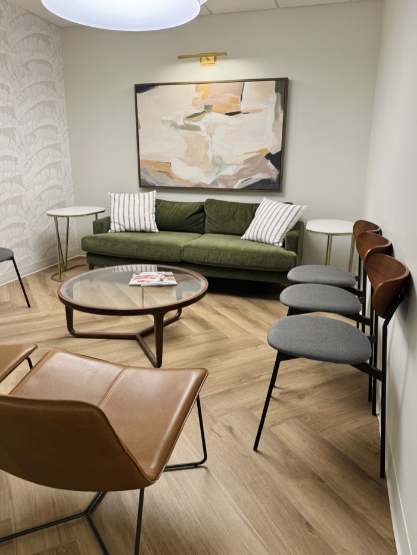

Individual & Couples Therapy in Nashville
Welcome! I am so glad you are here.
I believe healing begins in the context of safe and secure relationships, when your pain is tenderly witnessed and held by someone who cares. Therefore, I am dedicated to creating a compassionate and safe space where you can feel seen, heard and understood.
I would be honored to join you in your therapeutic journey as you heal, grow and blossom through authentic attachment to self and others.
Let’s ConnectAttachment-focused therapy for individuals and couples.
Clinical Specialties
I specialize in working with individuals who are experiencing:
- Grief and Loss
- Anxiety
- Depression
- Hurt from Unprocessed Trauma
- Relationship Conflict and Disconnection
- Difficult Life Transitions
- Perfectionism and Self Criticism
- Dysfunctional Family Systems
Education & Advanced Training
Completed
Master of Marriage & Family Therapy from Lipscomb University
Advanced Training in Play Therapy
Cognitive Processing Therapy from Medical University of South Carolina
Gottman Method Couples Therapy Level 1
Prepare Enrich Certified Facilitator
In Process
EMDR Training
Certification in Emotionally Focused Individual Therapy through ICEEFT
Member of the American Association for Marriage and Family Therapy
Under the clinical supervision of Courtney Nash (License #2350).
About the therapist
Marcia Truitt, AMFT
Individual & Couples Therapist
My path to becoming a therapist was shaped by my own experience as a therapy client. I am deeply grateful for each of the therapists who have supported me individually, my marriage and our family. Walking through hardships and suffering has changed me to approach life with deeper humility, empathy, and kindness toward myself and others.
In addition to my clinical training, my experience of growing up in Ecuador, and later living in Mexico as an adult, has shaped my deep appreciation for cultures and diversity. I bring a sense of deep curiosity about the unique life experiences of each client. I strive to highlight their strengths, and celebrate their beautiful differences.
I am a relentless optimist about how the therapeutic experience can change lives bringing healing and growth. I genuinely love this work!
Outside of the therapy room, I enjoy spending time with my husband and two teens - cooking together, playing board games or listening to my husband read us chapter books outloud. (Yes, our kids feel they are getting too old for this, but I’m not yet ready to give up these sweet moments with them.) I also enjoy connecting with close friends, watching movies, going on long walks, reading, traveling the world and eating all types of international food.
Therapeutic approach
I believe all individuals have a core need to be deeply connected to themselves and to others. These safe and secure attachments are vital for our survival.
I am passionate about helping you develop an authentic and compassionate connection with your inner self, through gently exploring the parts of your story which have brought deep hurt and isolation. Together, we will practice being attuned to what is happening inside you, holding and engaging your vulnerable emotions instead of avoiding them. We will notice how you have learned to cope, the skills you have developed to survive. We will be curious about how your coping skills might have become maladaptive, continuing to negatively impact you today. Together, we will explore what meaning you have made from these painful life experiences, what negative messages you have believed, before we gently seek the truer truth that you can hold instead.
I believe you must know yourself authentically, so that you can love yourself deeply.
This is safe and secure attachment to self.
I am also passionate about helping you develop authentic and secure attachments with others through learning how to be accessible, responsive and engaged emotionally. When you have the ability to give and receive love from safe others, you will carry a felt sense of security through life which allows you to venture out into the new and unknown, just like a toddler on a playground who knows their parent is nearby.
As a therapist, my deepest desire is for you to be fully known, and deeply loved by self and others!
Creating these healthy and strong relationships with ourselves and others is a lifelong process that requires intentional and tender nurturing.
I will meet you where you are in your journey and adjust the pace of our work together to meet your individual needs.
My therapeutic approach is rooted in attachment science and utilizes evidence based practices. I integrate interventions from Emotionally Focused Therapy for couples and individuals, Cognitive Behavioral Therapy, and Solution Focused Therapy. I am close to completing my training in EMDR, an evidenced based treatment found to be extremely beneficial in working with all types of trauma including PTSD.
I believe that individuals are beautifully complex beings made up of emotions, thoughts and behaviors. Together, we will notice how these are connected and affect each other, in both positive and negative ways.
I recognize the deep connection between emotional, mental and physical health. This holistic framework guides my integrated work to healing.
Heal. Grow. Blossom. Through Authentic Attachment.
Rates & availability
50-minute clinical hour
50-minute clinical hour
I offer a limited number of reduced-rate sessions based on need. If you want to apply, please contact me to see if you meet the criteria.
Blossom Therapy is private pay only. Insurance is not accepted at this time.
Sessions are by appointment only.
Location
Midtown Therapy Space
210 25th Ave N. Suite 700, Nashville, TN 37203
My office is in the Midtown Therapy Space. Free parking is available on the lower levels of the building. Elevators will bring you up to the waiting room where I will meet you.
My office is wheelchair accessible.

Contact
Interested in working with me? Please fill out the form below and I will reach out to schedule your free 15-minute consultation to assess if I am a good fit for your needs.
Under the No Surprises Act, clients who are not using insurance are entitled to a Good Faith Estimate of expected costs before treatment begins. If you’d like one, note it in your inquiry and I’ll send it to you.